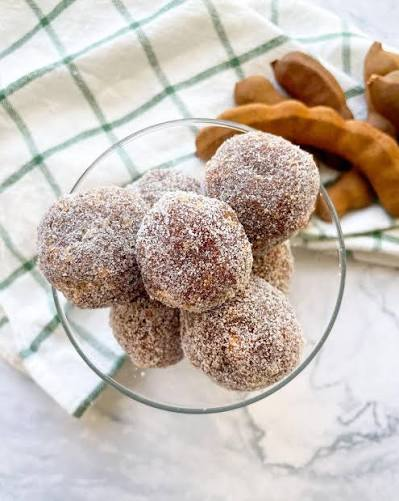
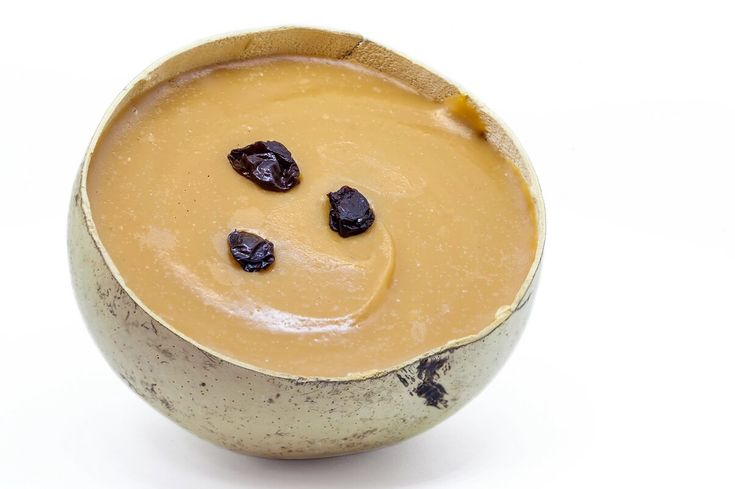
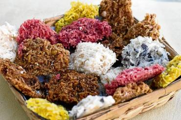

Un recorrido
por la dulzura
Seis regiones, seis maneras de contar Colombia a través de sus postres.
Elige un sabor y empieza el viaje →

01
Caribe
Enyucado
Suave, dorado y lleno de tradición. El sabor del Caribe en cada bocado.
→
02
Andina
Cuajada con melao
La mezcla perfecta entre la frescura de la cuajada y la dulzura del melao de caña.
→
03
Pacífica
Cocadas del Pacífico
Un bocado de mar, tradición y coco, con el alma del Pacífico colombiano.
→
04
Amazonía
Dulce de copoazú
Exótico, intenso y único. Un fruto amazónico que se convierte en un postre inolvidable.
→
05
Orinoquía
Tungos dulces
Pequeños y tentadores, los tungos son un clásico postre de la llanura, con todo el sabor del campo.
→
06
Insular
Torta de coco
Fresca, esponjosa y llena de sabor a mar. El postre que sabe a isla.
→